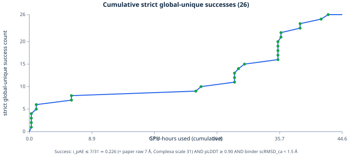

v1
Adaptive Binder Discovery
Fixed-route and adaptive campaign results with discovery curves, decision snapshots, and 24-hour and 48-hour job summaries.
Interactive archives and experiment records, organized by research area.
De novo protein design
Completed computational binder-design campaigns with result explorers, discovery curves, archived job views and structure-level comparisons.

Fixed-route and adaptive campaign results with discovery curves, decision snapshots, and 24-hour and 48-hour job summaries.
Multi-target comparisons, route-level outcomes and candidate-quality summaries from a completed campaign.
Interactive throughput, diversity, candidate-quality and campaign-replay views from the completed multi-target study.
Learned token ordering
Experiments on learned generation orders for masked and causal visual autoregressive models, including MAR, LlamaGen and latent-planning analyses.
Research motivation, architecture, results summary and links to the detailed experiment records.
Experiments on ordering visual tokens for masked autoregressive generation.
Ordering experiments for causal visual autoregressive generation.
Planning and analysis for choosing generation order from learned visual latent representations.